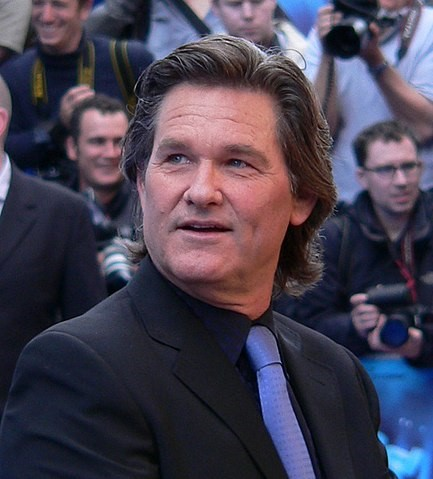

ACTORES PRINCIPALES
KURT Russell
Nombre en la pelicula:ROBERT RAMSEY
Un padre que intenta sobrevivir al naufragio de un crucero y encontrar a su hija Jennifer quien se encuentra desaparecida dentro del barco
Emmy Rossum
Nombre en la pelicula:JENNIFER RAMSEY
Es la hija del exalcalde de new york Robert Ramsey quien se encontraba desaparecida dentro del crucero luego del accidente,
RICHARD DREYFUSS
Nombre en la pelicula:Richard Nelson
Es un hombre rico quien antes del accidente envia un mensaje a su expareja; siente tanta tristeza que piensa en suicidarse pero se percata
de la gran ola y rapidamente se entra dentro del gran crusero.